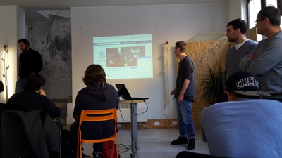

ALTERNANZA SCUOLA-LAVORO
CONTENT MARKETING,SEOe GROWTH HACKING
English version

Il 19 aprile la nostra classe si è nuovamente recata ad Impact Hub. La giornata e’ iniziata cercando di comprendere il concetto di “spazio di coworking”, ovvero uno spazio dove le persone, in base alle proprie conoscenze ed esperienze, lavorano insieme per creare e migliorare i propri progetti. Successivamente si è parlato dei social network e della loro sempre più crescente influenza nelle aziende; è emerso che il social network più utilizzato dagli utenti(anche in ambito lavorativo) è Facebook, grazie ai suoi 25 milioni di utenti mensili solamente in Italia.

Abbiamo poi affrontato l'importanza nei siti web dei SEO (Search Engine Optimization), ovvero metodi utilizzati per ottimizzare i siti web. In seguito alla spiegazione, ci siamo divisi in gruppi e abbiamo creato una nostra pagina Facebook con un argomento a scelta, e dopo averla realizzata, l'abbiamo presentata a tutti gli altri. La pagina Facebook del mio gruppo era dedicata a un'azienda in campagna in cui si potevano comprare salumi, formaggi, etc. Abbiamo pensato che un modo per farsi conoscere era creare un evento con giochi e attività divertenti per gli spettatori,
come ad esempio una gara di maialini. Questa idea è piaciuta molto, infatti abbiamo vinto!!!